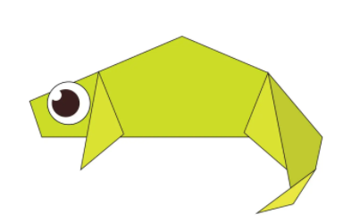

Origami animals!
-
camels store water in a hump
-
camels can survive for a few weeks without water
-
camels can smell water from up to a mile away
-
giant pandas have vertical slits for pupils.
-
At 5 months old, giant pandas learn how to climb
-
Pandas have an extended wrist bone that they use like a thumb to help them grip food
-
Pigeons have excellent hearing abilities. They can detect sounds at far lower frequencies than humans are able to, and can hear distant storms and volcanoes.
-
Pigeons can fly at altitudes up to and beyond 6000 feet, and at an average speed of 77.6 mph. The fastest recorded speed is 92.5 mph.
-
Although pigeon droppings are seen by some as a problem in modern society, a few centuries ago pigeon poop was seen as extremely valuable. It was viewed as the best available fertiliser and armed guards would even stand by dovecotes pigeon houses to stop others taking the droppings.

-
Chameleons are one of few animals that can change colors.
-
A chameleon can grow to 27 inches long.
-
The smallest chameleon species is the leaf chameleon and it grows to just 0.5 inches long.